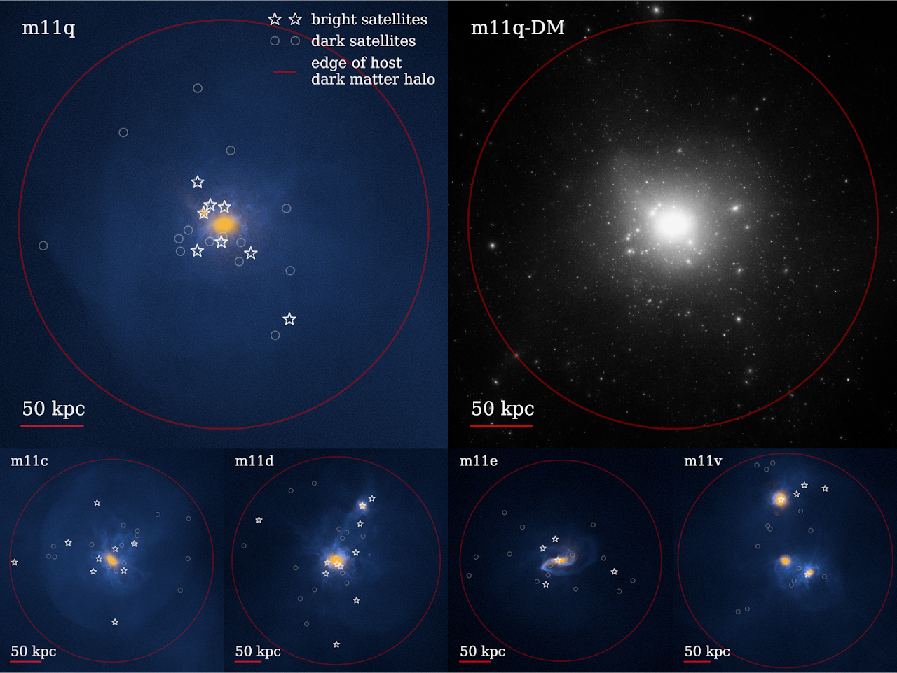

I am primarily interested in Local Group Cosmology, the general aim of which is to understand the formation of our own galaxy and its environment (including numerous dwarf galaxy satellites, and a massive neighbor Andromeda). My particular interet is in the Milky Way's most massive satellite, the LMC, and more generally, the class of bright dwarf galaxy it inhabits, and the contribution of galaxies such as these to the distribution of matter in the universe.
My first publication used the Feedback in Realistic Environments (FIRE) simulations to investigate the connection between the environment of LMC-mass galaxies, their population of invisible satellites known as dark matter subhalos, and their luminous satellites. I am also continuing my work with FIRE to dive further into the formation and evolution of low-mass dwarf galaxies in LMC-like environments. The image below is from my first publication and visualizes the dark and luminous components of the environments of a few LMC-like galaxies in FIRE.

I also work with SMUGGLE (Stars and MUltiphase Gas in GaLaxiEs) - a new galaxy formation model that uses the AREPO moving mesh code. I am running new idealized high-resolution simulations to investigate the distribution of dark matter within dwarf galaxies. The following movie is a visualization of one of these simulations.